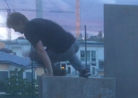
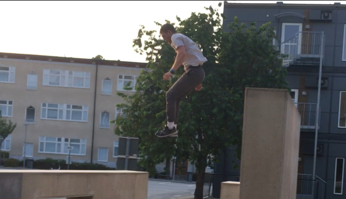
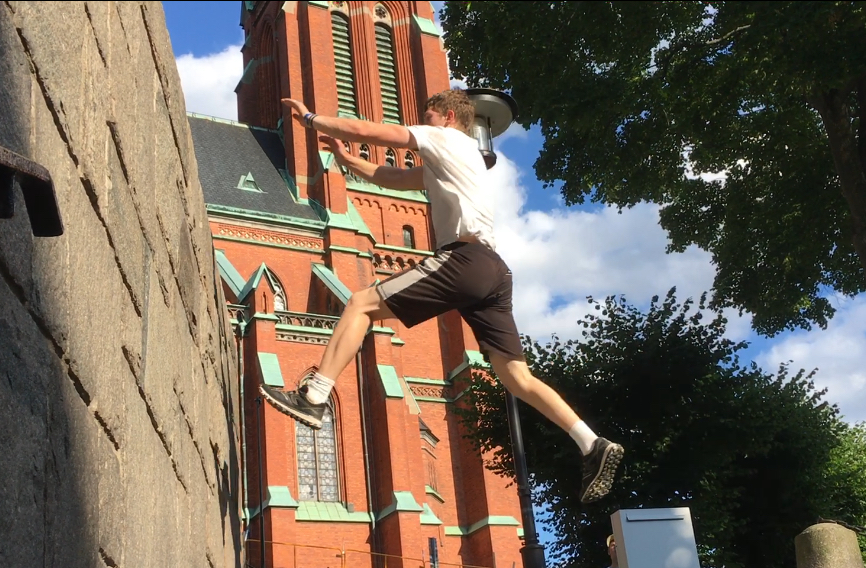
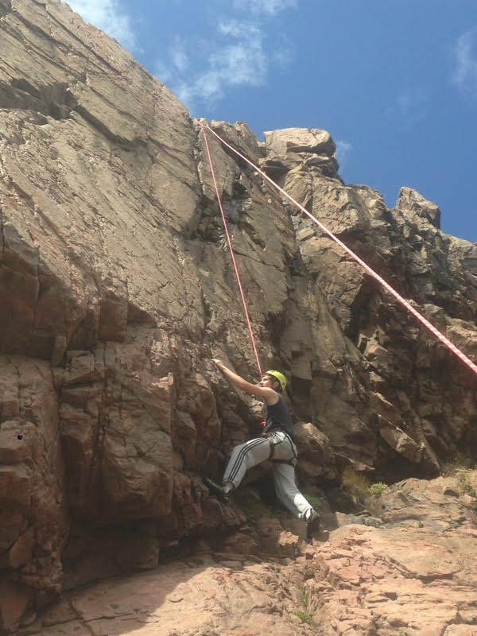
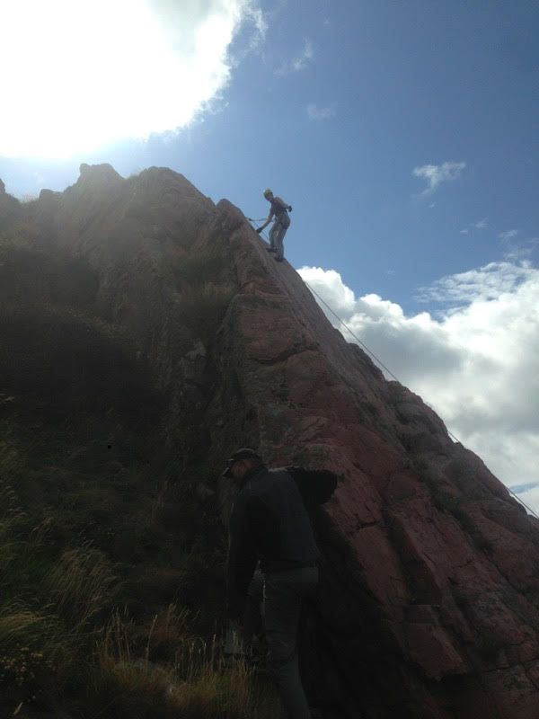
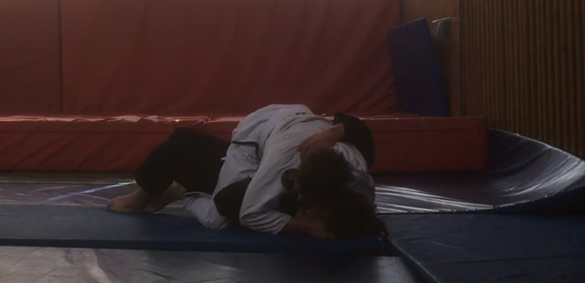

& Basketball
I stopped both before 2010
| Childhood sports | PARKOUR | Rock Climbing | Jiujitsu |
|---|---|---|---|
|    |   |  | |
| Primarily Football & Basketball I stopped both before 2010 |
I started parkour in january 2013, age 15, and I loved it and I still love it and it has completely changed my life. Still going strong at it | Climbing is basically a part of parkour and why I love that training form. I have had different on and off times, and are currently not training actively but planning to come back | Jiujitsu is a new discipline for me, as I started in march 2022. I felt that I missed out on a lot of self defense training and thought I badly needed it. I intend to keep going |
Other than that, Strength & Conditioning in general has worked okay so far, small injuries not withstanding
I have been regularly at a gym since september/october in 2020 and then I have had some on and off times during 2021, and now not so often anymore.
But I can still get some good workouts every now and then